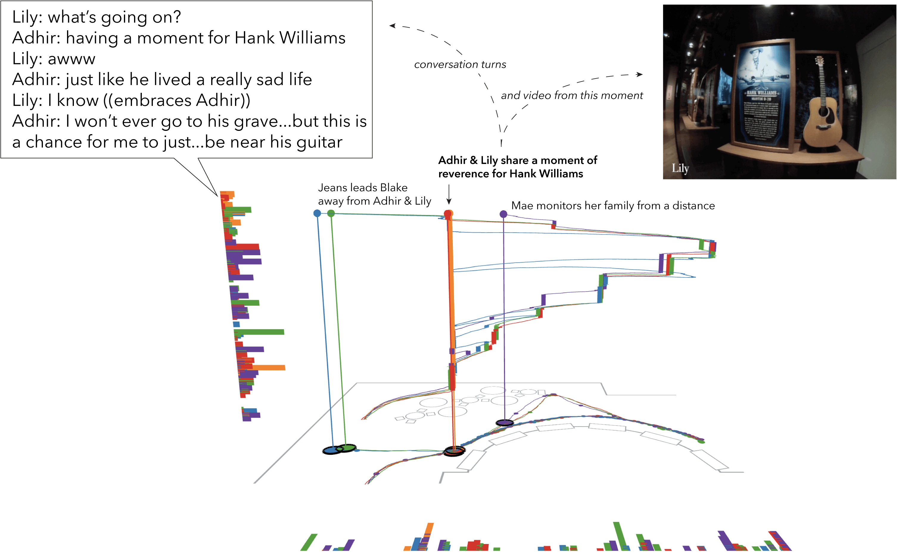

Figure 4. Annotated screenshot from an animation produced using the IGS. The screenshot shows the movement and conversation of the entire Bluegrass Family. Conversation is shown as rectangles aligned along the x-axis of the floor plan and also along the z-axis in the space-time view. Annotations, readable conversation, and video mark a moment mid-way through the Bluegrass Family’s visit to this space and illustrate different features of the IGS to animate and interact with data. Full animation available here
